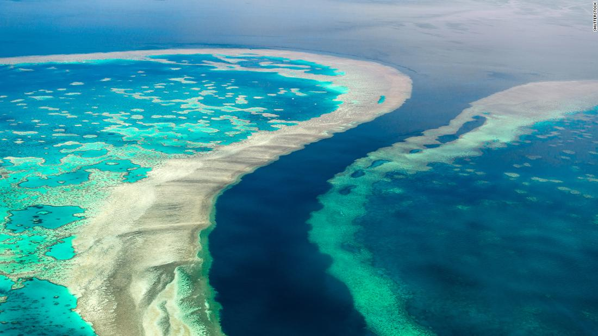

<!DOCTYPE html>

<html>
	<head>

		<title>
		Las Cataratas del Iguazú
		</title>
		<meta http-equiv="Content-Type" content="text/html; charset=utf-8"/>
	</head>
</html>

<h1> Las Cataratas del Iguazú </h1>
<p></p>

<body bgcolor= #b2c8eb>
<p  align="center"><font size= "4" color= "black"><i>Argentina/Brasil</i> </p>

<link rel="stylesheet" type="text/css" href="../css/estilos.css" media="screen">

<body>
<h2> Localización </h2>
<p>Se localizan sobre el río Iguazú, en el <u>límite entre la provincia argentina de Misiones y el estado brasileño de Paraná</u>. Están totalmente insertadas en áreas protegidas; el sector de la Argentina se encuentra dentro del parque nacional Iguazú, mientras que el de Brasil se encuentra en el parque nacional do Iguazú. </p>

<p>Las Cataratas del Iguazú se hallan dispuestas en forma que parece una gran "J" inversa. En la margen derecha (norte) se encuentra el territorio brasileño, el cual posee poco más de un 20 % de los saltos de dichas cataratas; y del lado izquierdo (sur) se hallan los saltos argentinos, los cuales conforman casi un 80 % de las cataratas. </p>
<p><a href="https://goo.gl/maps/igmbHwbjfbLK1TXt8"></a></p>

<h2> Origen  </h2>
<p> Las Cataratas del Iguazú <b> se formaron hace cerca de 200 mil años </b> a partir de una falla geológica, en el macizo de Brasilia, que generó un desnivel en el cauce del río Paraná lo que, a su vez, ocasionó que la desembocadura del río Iguazú se convirtiera en una inmensa cascada. </p>
<p> Fueron nombradas por primera ves en el año 1542, mientras realizaba una travesía desde el Océano Atlántico hasta Asunción del Paraguay, Alvar Nuñez Cabeza de Vaca, divisó las sorprendentes cataratas del río Iguazú y las bautizó como “Saltos de Santa María”, nombre que con el tiempo fue reemplazado por su primitiva denominación guaraní “Iguazú” </p>
<h2> Fauna </h2>
<p>La fauna que habita en este increíble paisaje esta formada por <u>más de 450 especies de aves, 80 de mamíferos y gran variedad de insectos en la superficie</u> , pero además dentro del agua podemos encontrar variedades de tortugas 🐢, peces 🐟 ...
Dentro de las especies de aves que existen destacan los <b>vencejos de cascada</b> que son la especie representativa de las Cascadas de Iguazú. Además, Las cascadas representan un refugio para algunos animales que se encuentran en peligro de extinción como: el yaguar, tapir, ocelote, tiricas, oso hormiguero, la yacutinga, águilas selváticas y el yacaré overo... </p>

<h2> Reconocimientos </h2>
<p> En 1984, el Parque Nacional Iguazú fue declarado Patrimonio de la Humanidad, por la Unesco. En 2013, la organización vuelve a galardonarlo como Valor Universal Excepcional, por ser un territorio de importancia cultural y natural que trasciende fronteras. </p>

<h2> Visualización </h2>
<video class= "center" scr= "../figuras/cata.mp4" width="250" height="170" controls poster="../figuras/cata.mp4"></video>

</body>

<table border="5" class="center">
<tr>

<td>
		<p><a href = '../index.html'><figcaption style = 'text-align:center'>Inicio</figcaption ></a></p>
	</td>
	<td>
		<p><a href = '../html/lagranbarreradecoral.html'><figcaption style = 'text-align:center'>La Gran Barrera De Coral</figcaption></a></p>
	</td>

	<td>
		<p><a href = '../html/elgranagujeroazul.html'><figcaption style = 'text-align:center'>El Gran Agujero Azul</figcaption></a></p>
	</td>

</tr>
<tr>
	<td>
		<p><a href = '../html/elgrancañon.html'><figcaption style = 'text-align:center'>El Gran Cañon</figcaption></a></p>
	</td>
	
	<td>
		<p><a href = '../html/ellagoness.html'><figcaption style = 'text-align:center'>El Lago Ness</figcaption></a></p>
	</td>
	<td>
		<p><a href = '../html/glacialperitomoreno.html'><figcaption style = 'text-align:center'>Glacial Perito Moreno</figcaption></a></p>


	</td>
</tr>

</table>